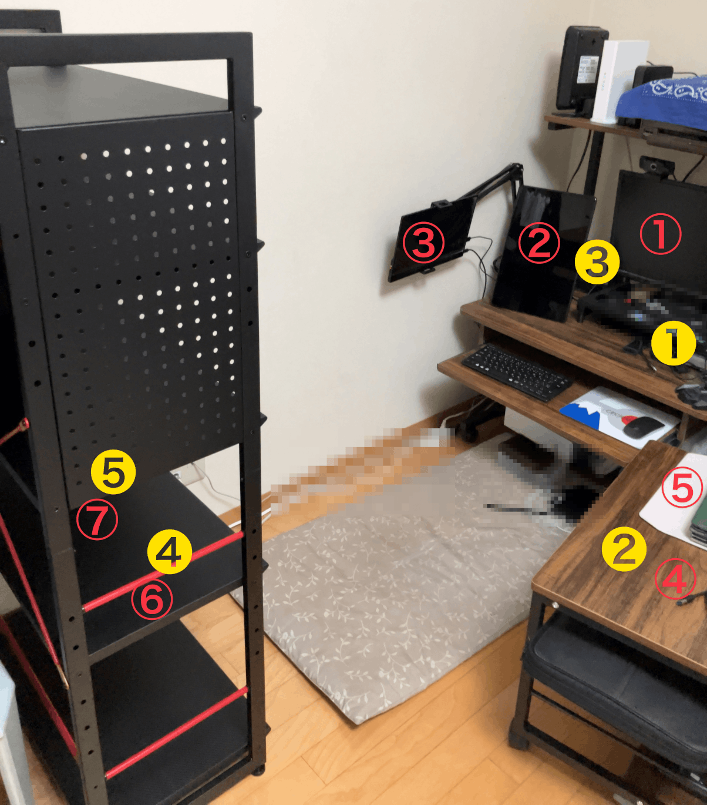

2024/08/04 @sogaoh
SRE NEXT 2024 LT - Track C 15:25〜
|
|
|
|
|
|
|  |
10社だった（稼働中は7社）
2回線 ＋ モバイル Wi-Fi（生命線） PCは 5 台を使い分け ディスプレイは 7 面 ・メインPCに 3 面 ・サブPCに 2 面（持出あり） ・Chromebookと貸与PCに各 1 面 ブラウザProfile使い分けを駆使 Mac の Mission Control で"面"を制御 |
<span class="hljs-comment"># ~/.zsh.d/functions.zsh</span>
<span class="hljs-keyword">function</span> <span class="hljs-function"><span class="hljs-title">aig</span></span>() {
ln -snf ~/src/aig ~/ghq
git config --global user.name <span class="hljs-string">"sogaoh"</span>
git config --global user.email <span class="hljs-string">"sogaoh@ant-in-giant.llc"</span>
ln -snf ~/.config/aws/aig/config ~/.aws/config
ln -snf ~/.config/aws/aig/credentials ~/.aws/credentials
ln -snf ~/.config/gcp/aig ~/.config/gcloud
sudo cp -p ~/.config/hosts/aig/hosts /private/etc/hosts
<span class="hljs-built_in">source</span> ~/.zshrc
}
（時給制の契約に関してのみ）
|
|
|
|
|
|
|
お気づきの点あれば
@sogaoh まで